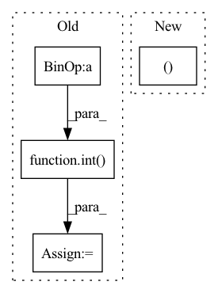

Pattern ID :730
Before Change
def forward(self, input, hx=None):
output_size = (
int( (input.size(-1) - self.kernel_size + 2 * self.padding_ih) / self.stride) + 1
)
// Handle the case of no hidden state provided
if hx is None:
hx = torch.zeros(input.size(0), self.h_channels, output_size, device=input.device)
// Run the optimized convgru-cell
return _opt_convgrucell_1d(
input,After Change
combined_conv = F.sigmoid(self.conv_zr(combined))
z, r = torch.split(combined_conv, self.hidden_dim, dim=1)
h_ = self.activation(self.conv_h1(input) + r * self.conv_h2(h_prev))
In pattern: SUPERPATTERN
Frequency: 3
Non-data size: 4
Instances Fragment ID: 2747081
Project Name: openclimatefix/skillful_nowcasting
Commit Name: 02c5ceadd01484d6ac8bce848ff76446fe7a6917
Time: 2021-10-18
Author: jacob@bieker.tech
File Name: nowcasting_gan/layers/ConvGRU.py
M Class Name: ConvGRU1DCell
N Class Name: ConvGRUCell
M Method Name: forward(3)
N Method Name: forward(3)
M Parent Class: nn.Module
N Parent Class: nn.Module
M File Name: nowcasting_gan/layers/ConvGRU.py
N File Name: nowcasting_gan/layers/ConvGRU.py
M Start Line: 83
M End Line: 101
N Start Line: 69
N End Line: 82
Before Change
device=wav.device,
dtype=torch.long,
)
factor = int( self.config.num_negatives // dynamic_num_negatives.item())
negative_sample_indices = torch.cat(
[negative_sample_indices] * factor, dim=-1
)
After Change
// Fairseq does it only on the masked indices, but this only work if you
// have long sentences. For more versatily, we sample on the entire sequence.
// value.
full_sentence_indices = np.ones((batch_size, sequence_length ))
// print(np.sum(mask_time_indices, axis=1))
negative_sample_indices = torch.tensor( Fragment ID: 2747073
Project Name: speechbrain/speechbrain
Commit Name: f0cab3643a40b62ad19d5a3eaafbc8d19f4805e4
Time: 2021-12-11
Author: parcollet.titouan@gmail.com
File Name: speechbrain/lobes/models/huggingface_wav2vec.py
M Class Name: HuggingFaceWav2Vec2Pretrain
N Class Name: HuggingFaceWav2Vec2Pretrain
M Method Name: forward(2)
N Method Name: forward(2)
M Parent Class: nn.Module
N Parent Class: nn.Module
M File Name: speechbrain/lobes/models/huggingface_wav2vec.py
N File Name: speechbrain/lobes/models/huggingface_wav2vec.py
M Start Line: 362
M End Line: 398
N Start Line: 351
N End Line: 369
Before Change
// TODO: loop if window_size is greater than 2 (for cycle loss)
bsz, encoder_dim, n_points = keypoint_desc.size()
batch_size = int( bsz / self.window_size)
_, _, height, width = desc_dense.size()
src_desc = keypoint_desc[::self.window_size] // B x C x N
src_desc = F.normalize(src_desc, dim=1)After Change
BW, encoder_dim, n_points = keypoint_desc.size()
batch_size = int(BW / self.window_size)
_, _, height, width = desc_dense.size()
kp_inds, dense_inds = get_indices(batch_size, self.window_size)
src_desc = keypoint_desc[kp_inds] // B x C x N
src_desc = F.normalize(src_desc, dim=1) Fragment ID: 2747075
Project Name: utiasasrl/hero_radar_odometry
Commit Name: 3393ae645f3b4eea057784a2cd3746aefb0c81b1
Time: 2021-01-08
Author: keenburn2004@gmail.com
File Name: networks/softmax_matcher.py
M Class Name: SoftmaxMatcher
N Class Name: SoftmaxMatcher
M Method Name: forward(5)
N Method Name: forward(5)
M Parent Class: nn.Module
N Parent Class: nn.Module
M File Name: networks/softmax_matcher.py
N File Name: networks/softmax_matcher.py
M Start Line: 26
M End Line: 63
N Start Line: 27
N End Line: 66